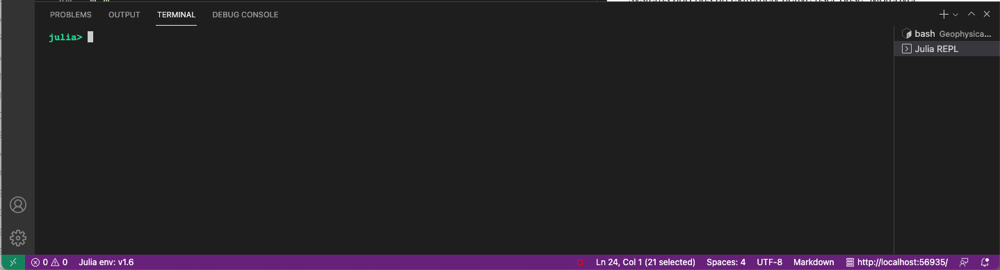
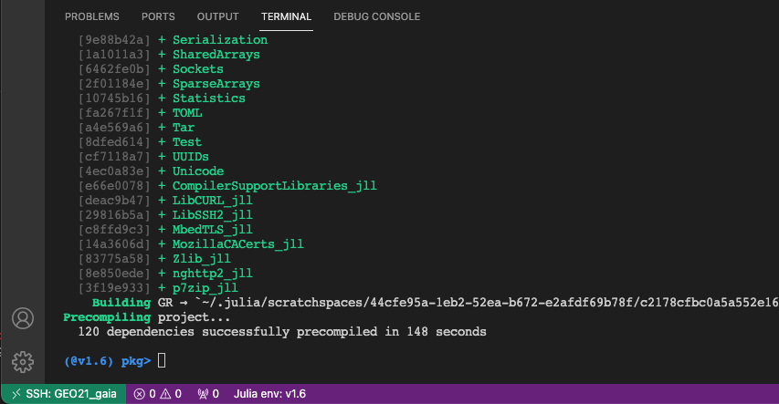
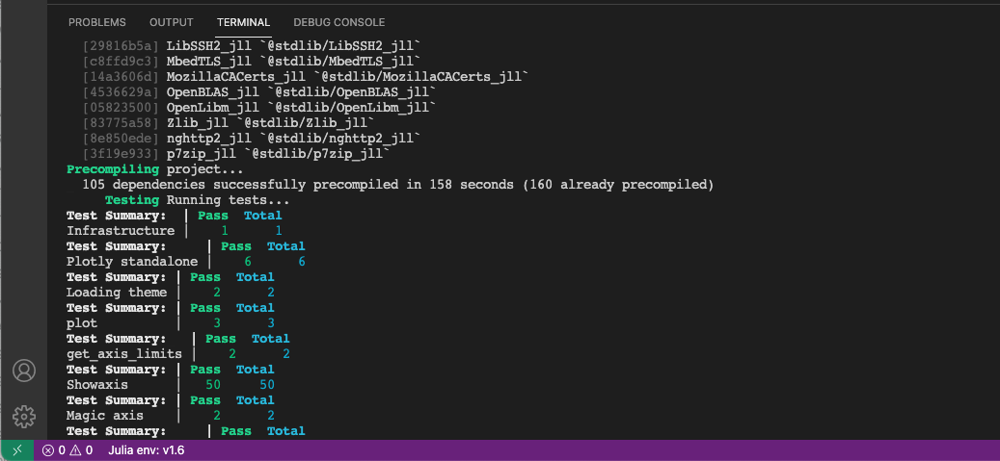
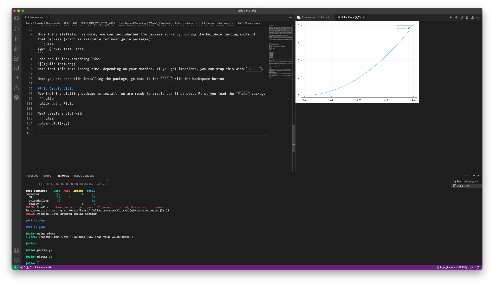
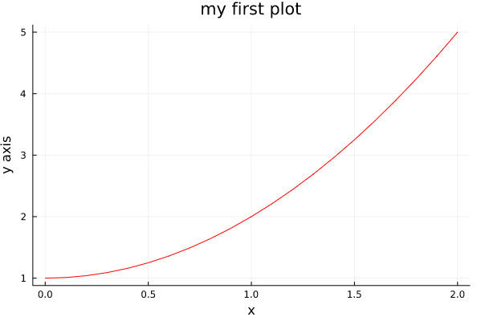
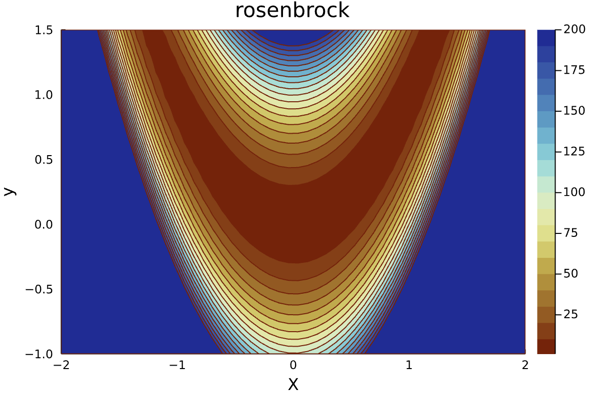
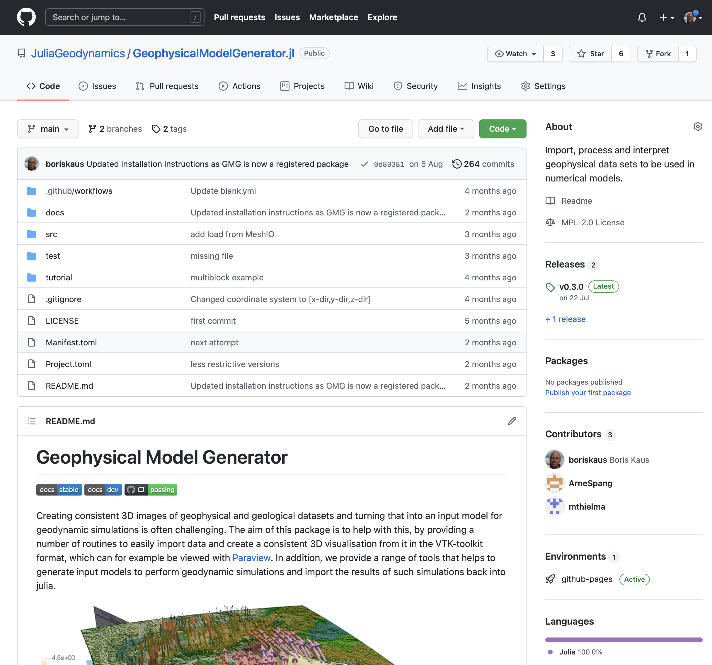
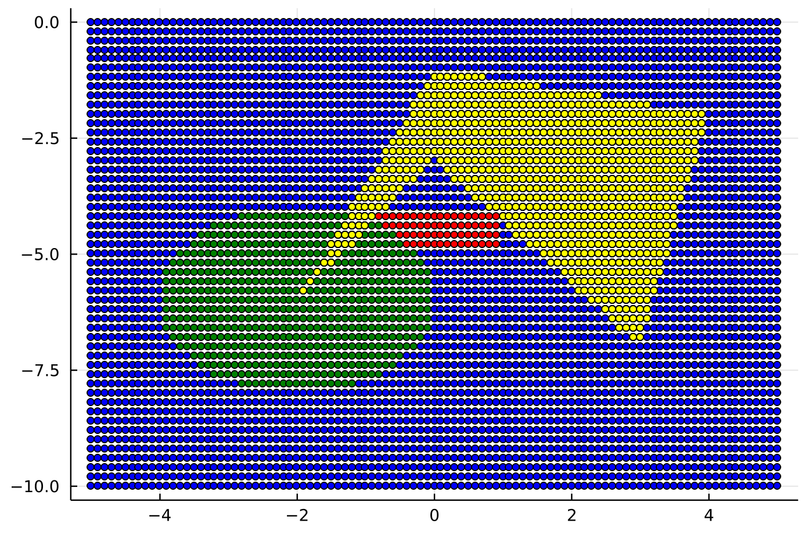

JGU Mainz, Geophysical Modelling, WS 22/23
In this class, we will use the geodynamics code LaMEM to solve geoscientific problems. LaMEM was developed in Mainz and solves the governing equations (conservation of mass, momentum and energy) using a staggered finite difference method and a marker-in-cell approach using non-linear visco-elasto-plastic rheologies. It is one of the most advanced codes available at the moment and is fully parallel and 3D even when we will not use much of that capabilities during the semester.
What you will mostly be busy with at the beginning of the semester is to create a model setup. This is described on the LaMEM wiki page. For simple geometries you can use the build-in geometry tools but for more complicated cases it is useful to use either Octave (or MATLAB if you happen to have a license) or Julia to create the model setup.
In the past we have mostly used Octave/MATLAB but this has several disadvantages, because octave doesn't work well on all systems and MATLAB costs money and is not installed on many larger computer clusters. Moreover, they are both slow and don't work well in parallel. A recent alternative is the Julia scientific programming language, which is fast, completely open source and comes with a nice package manager. It works on essentially all systems and has an extremely active user base. Moreover programming in julia is very similar to using MATLAB, so it will not be a big change for many of you. As a result, we are slowly transitioning the codes in our research group to julia.
We are assuming that you are not yet familiar with Julia. The purpose of these exercises is therefore to give you a crash course in how to install it on your system, create a few programs, make plots etc.
The best way to start is to download a recent version of julia (1.6.3) from https://julialang.org (use a binary installer).
The recommended debugger for julia is Microsoft Visual Studio Code, where you should install the julia extension. See this page for more info.
Once this is done (in the order indicated above), you can start the Julia REPL (which stands for read-eval-print-loop, similar to the command window in MATLAB) by typing in the Command Palette (which you find in VS Code under the menu View->Command Palette):
>Julia: Start REPL
This will take a bit of time initially, as it needs to compile. Once that is done, you should see the following:

Let's start with some simple calculations within the REPL
julia> 2+3 julia> 3*4 julia> 5^2
Powers are performed before division and multiplication, which are done
before subtraction and addition.
julia> 2+3*4^2
The arrow keys allow 'command-line editing' which cuts down on the amount of typing required, and allows easy error correction. Press the "up" arrow, and add /2. What will this produce?
julia> 2+3*4^2/2
Parentheses may be used to group terms, or to make them more readable.
julia> (2+3*4^2)/2
The equality sign is used to assign values to variables.
julia> a = 3 julia> b = a^2 julia> a/b
If no other name is given, an answer is saved in a variable named ans
julia> a/b 3.0 julia> ans 3.0 julia> c=2*ans 6.0 julia> ans 6.0
Sofar we worked with scalar values. We can always determine the type of a value with
julia> typeof(a) Int64
which shows that a is an integer value.
If we define a as:
julia> a = 2.1 julia> typeof(a) Float64
which shows that now a is a double precision number.
Sofar we dealt with scalar values. Working with vectors in Julia is simple:
julia> x=0:.1:2 0.0:0.1:2.0
We can retrieve a particular value in the vector x by using square brackets:
julia> x[3] 0.2
Arrays in julia start at 1:
julia> x[1] 0.0
You can perform computations with x:
julia> y = x.^2 .+ 1 21-element Vector{Float64}: 0.0 0.010000000000000002 0.04000000000000001 0.09 0.16000000000000003 0.25 0.36 0.48999999999999994 ⋮ 1.9599999999999997 2.25 2.5600000000000005 2.8899999999999997 3.24 3.61 4.0
Note the dot . here, which tells julia that every entry of x should be squared and 1 is added.
If you want a vector with values, they should be separated by commas:
julia> a=[1.2, 3, 5, 6] 4-element Vector{Float64}: 1.2 3.0 5.0 6.0
A matrix in julia can be defined as
julia> a = [1 2 3; 4 5 6] 2×3 Matrix{Int64}: 1 2 3 4 5 6
Note that the elements of a matrix being entered are enclosed by brackets; a matrix is entered in "row-major order" (i.e. all of the first row, then all of the second row, etc); rows are separated by a semicolon (or a newline), and the elements of the row should be separated by a space.
The element in the i'th row and j'th column of a is referred to in the usual way:
julia> a[1,2] 2
The transpose of a matrix is the result of interchanging rows and columns.
Julia denotes the transpose by folowing the matrix with the single-quote [apostrophe].
julia> a' 3×2 adjoint(::Matrix{Int64}) with eltype Int64: 1 4 2 5 3 6
New matrices may be formed out of old ones, in many ways.
julia> c = [a; 7 8 9] 3×3 Matrix{Int64}: 1 2 3 4 5 6 7 8 9 julia> [a; a; a] 6×3 Matrix{Int64}: 1 2 3 4 5 6 1 2 3 4 5 6 1 2 3 4 5 6 julia> [a a a] 2×9 Matrix{Int64}: 1 2 3 1 2 3 1 2 3 4 5 6 4 5 6 4 5 6
There are many built.-in matrix constructions. Here are a few:
julia> rand(1,3) 1×3 Matrix{Float64}: 0.0398622 0.229126 0.148148 julia> rand(2) 2-element Vector{Float64}: 0.668085153596309 0.4275013437388613 julia> zeros(3) 3-element Vector{Float64}: 0.0 0.0 0.0 julia> ones(3,2) 3×2 Matrix{Float64}: 1.0 1.0 1.0 1.0 1.0 1.0
Use a semicolon to suppress output within the REPL:
julia> s = zeros(20,30);
This is useful, when working with large matrices.
An often used part of Julia is the 'colon operator,' which produces a list.
julia> -3:3 -3:3
The default increment is by 1, but that can be changed.
julia> x=-3:.4:3
This can be read: x is the name of the list, which begins at -3, and whose entries increase by 0.4, until 3 is surpassed. You may think of x as a list, a vector, or a matrix, whichever you like.
You may wish use this construction to extract "subvectors," as follows.
julia> x[4:8] julia> x[9:-2:1] julia> x=10:100; julia> x[40:5:60]
The colon notation can also be combined with the earlier method of constructing matrices.
julia> a= [1:6 ; 2:7 ; 4:9]
A very common use of the colon notation is to extract rows, or columns, as a sort of "wild-card" operator which produces a default list. The following command demonstrates this
julia> s=rand(10,5); s[6:7,2:4] 2×3 Matrix{Float64}: 0.163274 0.923631 0.877122 0.210374 0.321996 0.281341
Matrices may also be constructed by programming. Here is an example, creating a 'program loop.', which shows how
julia> A = [i/j for i=1:10,j=1:11]
If necessary, re-enter the matrices
julia> a=[1 2 3; 4 5 6; 7 8 10] julia> b=[1 1 1]'
Scalars multiply matrices as expected, and matrices may be added in the usual way; both are done 'element by element.'
julia> 2*a, a/4 ([2 4 6; 8 10 12; 14 16 20], [0.25 0.5 0.75; 1.0 1.25 1.5; 1.75 2.0 2.5])
Scalars added to matrices require you to add a dot, as
julia> a.+1 3×3 Matrix{Int64}: 2 3 4 5 6 7 8 9 11
Matrix multiplication requires that the sizes match. If they don't, an error message is generated.
julia> a*b 3×1 Matrix{Int64}: 6 15 25 julia> a*b' ERROR: DimensionMismatch("matrix A has dimensions (3,3), matrix B has dimensions (1,3)") Stacktrace: [1] _generic_matmatmul!(C::Matrix{Int64}, tA::Char, tB::Char, A::Matrix{Int64}, B::Matrix{Int64}, _add::LinearAlgebra.MulAddMul{true, true, Bool, Bool}) @ LinearAlgebra /Users/julia/buildbot/worker/package_macos64/build/usr/share/julia/stdlib/v1.6/LinearAlgebra/src/matmul.jl:814 [2] generic_matmatmul!(C::Matrix{Int64}, tA::Char, tB::Char, A::Matrix{Int64}, B::Matrix{Int64}, _add::LinearAlgebra.MulAddMul{true, true, Bool, Bool}) @ LinearAlgebra /Users/julia/buildbot/worker/package_macos64/build/usr/share/julia/stdlib/v1.6/LinearAlgebra/src/matmul.jl:802 [3] mul! @ /Users/julia/buildbot/worker/package_macos64/build/usr/share/julia/stdlib/v1.6/LinearAlgebra/src/matmul.jl:302 [inlined] [4] mul! @ /Users/julia/buildbot/worker/package_macos64/build/usr/share/julia/stdlib/v1.6/LinearAlgebra/src/matmul.jl:275 [inlined] [5] *(A::Matrix{Int64}, B::Matrix{Int64}) @ LinearAlgebra /Users/julia/buildbot/worker/package_macos64/build/usr/share/julia/stdlib/v1.6/LinearAlgebra/src/matmul.jl:153 [6] top-level scope @ REPL[107]:1
A matrix-matrix multiplication is done with:
julia> a*a 3×3 Matrix{Int64}: 30 36 45 66 81 102 109 134 169
whereas adding a dot performs a pointwise multiplication:
julia> a.*a 3×3 Matrix{Int64}: 1 4 9 16 25 36 49 64 100
Now it would be nice to create a plot of the results. In order to do so, you first need to install a plotting package. Many excellent are available, with the most widely used ones being Plots.jl and Makie.jl
Before being able to use a package, we first need to install it. Julia has a build-in package manager that automatically takes care of dependencies (that is: other packages that this package may use, including the correct version). You can start the package manager by typing ] in the REPL:
julia> ] (@v1.6) pkg>
If you want to go back to the main REPL, use the backspace key.
As an example, lets install the Plots package:
(@v1.6) pkg> add Plots
This is will download and precompile all dependencies and will look something like this:

The plotting package is fairly large so this will take some time, but this only has to be done once.
Once the installation is done, you can test whether the package works by running the build-in testing suite of that package (which is available for most julia packages):
(@v1.6) pkg> test Plots
This should look something like:

Note that this takes a looong time, depending on your machine. If you get impatient, you can stop this with CTRL-C.
Once you are done with the package manager, go back to the REPL with the backspace button.
Now that the plotting package is install, we are ready to create our first plot. First you load the Plots package
julia> using Plots
Next create a plot with
julia> plot(x,y)

If you are using VSCode, it should show the plot in a seperate tab as in the figure above.
We can add labels etc. with:
julia> x=0:.1:2 julia> y=x.^2 .+ 1 julia> plot(x,y, xlabel="x", ylabel="y axis", title="my first plot",label=:none, color=:red)
which gives:

There are lots of options within the plotting package. Have a look at the tutorial here.
If you are used to work with MATLAB/Octave, here a quick summary of how plotting options are called in the Plots.jl package of julia:
| MATLAB/Octave | Julia |
|---|---|
| plot(x,y,'r--') | plot(x,y,linestyle=:dash, color=:red) |
| scatter(x,y) | scatter(x,y) |
| mesh(x,y,z) | wireframe(x,y,z) |
| surf(x,y,z) | plot(x,y,z,st=:surface) |
| pcolor(x,y,z) | heatmap(x,y,z) |
| contour(x,y,z,50) | contour(x,y,z,level=50) |
| contourf(x,y,z) | contour(x,y,z,level=50,fill=true) |
A function in julia can be defined in an extremely simple manner:
julia> f(x) = x.^2 .+ 10 f (generic function with 1 method)
You can now use this function with scalars, vectors or arrays:
julia> f(10) 110 julia> x=1:3 julia> f(x) 3-element Vector{Int64}: 11 14 19 julia> y=[1 2; 3 4] julia> f(y) 2×2 Matrix{Int64}: 11 14 19 26
Functions ofcourse don't have to be one-liners, so you can also define it as:
julia> function f1(x) y = x.^2 .+ 11 return y end f1 (generic function with 1 method)
This creates a new array y and returns that.
So how fast is this function? Lets start with defining a large vector:
julia> x=1:1e6;
It turns out that julia has a handy macro, called @time, with which you can record the time that a function took.
julia> @time f1(x) 0.091410 seconds (407.44 k allocations: 31.651 MiB, 9.82% gc time, 94.01% compilation time) 1000000-element Vector{Float64}: 12.0 15.0 20.0 27.0 36.0 47.0 60.0 75.0 92.0 ⋮ 9.9998600006e11 9.99988000047e11 9.99990000036e11 9.99992000027e11 9.9999400002e11 9.99996000015e11 9.99998000012e11 1.000000000011e12
So this took 0.09 seconds on my machine. Yet, the first time any function in julia is executed, it is compiled and that's why 94% of the time was the compilation time. If we run the same function again, it is much faster and creates 2 allocations:
julia> @time f1(x) 0.006275 seconds (2 allocations: 7.629 MiB)
In general, it is a very good idea to put things in functions within julia, as it allows julia to precompile the routines.
Also note that you need to restart the REPL or your Julia session every time you redefine a function or a structure.
In general, you want to put your code in a julia script so you don't have to type it always in the REPL. Doing that is simple; you simple save it as a textfile that had has *.jl as an ending.
A simple example is the following test1.jl script:
using Plots function rosenbrock(x,y; a=1,b=100) xt = x' # transpose f = (a .- xt).^2 .+ b.*(y .- xt.^2).^2 return f end x = range(-2.0,2.0,length=50) y = range(-1.0,1.5,length=50) f = rosenbrock(x,y) # Create a contourplot contour(x,y,f, levels=0:10:200, fill=true, xlabel="X", ylabel="y", title="rosenbrock", color=:roma, clim=(1,200))
Note that the rosenbrock function has optional parameters (a,b). Calling it with only X,Y will invoke the default parameters, but you can specify the optional ones with f=rosenbrock(x,y, b=200,a=3).
You can run this script in the julia in the following way:
include("test1.jl")
Be aware that you need to be in the same directory as the script (see below on how you can change directories using the build-in shell in julia, by typing ; in the REPL).
The result looks like (have a look at how we customized the colormap, and added info for the axes).

In general, you can get help for every function by typing ? which brings you to the help terminal. Next type the name of the function.
For example, lets find out how to compute the average of an array
julia>?mean
You can add help info to your own functions by adding comments before the function, using """
""" y = f2_withhelp(x) Computes the square of `x` and adds 10 Example ======= julia> x=1:10 julia> y = f2_withhelp(x) 10-element Vector{Int64}: 11 14 19 26 35 46 59 74 91 110 """ function f2_withhelp(x) y = x.^2 .+ 10 return y end
Julia has a build in terminal, which you can reach by typing ;. This comes in handy if you want to check in which directory you are, change directories, or look at the files there.
julia>; shell> pwd /Users/kausb
Note that this invokes the default terminal on your operating system, so under windows the commands are a but different than under linux.
Once you are done with the terminal, you get back to the REPL, by using the backspace.
The official julia manual is a good place to start. Many of the julia packages are hosted on github and have help pages as well. An example, which we will use in this class, is GeophysicalModelGenerator.jl

If you click on the blue buttons, you will be taken to the help pages. Note that it is quite easy to generate a new package in julia, add tests for that package, and create an online documentation. Doing that goes beyond the scope of this class, but if you are interested you can ask us or look at the julia manual.
A common operation you will do during this class is setting material properties on markers.
Let's do some warming-up exercises for that.
We start with defining the X,Z coordinates of the markers:
julia> x=-5:.1:5 julia> z=-10:.2:0 julia> X = ones(size(z))*x' julia> Z = z*ones(size(x))' julia> Phase = zeros(Int64,size(X))
Phase is now a 2D array that defined the "rocktype" (or Phase) of ever marker, which is defined by the 2D coordinate arrays X,Z. Hint: you can copy-paste the whole block above tou your julia REPL. It will automatically remove the julia> at the beginning of every line.
Now let’s assume that all points between x=[-1 .. 1] and z=[-5 .. -4] have a different rock type. We can use that by finding all points that are between these coordinates, using the findall command.
julia> ind = findall( (X.>-1) .& (X.<1) .& (Z.>-5) .& (Z.<-4) ); julia> Phase[ind] .= 1
Note that you have to add brackets around every statement and that you have to use a dot (.) to indicate that it applies for every entry in the arrays.
Let's create a plot of the result:
julia> using Plots julia> ind = findall(Phase .== 0 ) julia> scatter(X[ind],Z[ind],color=:blue, legend=false, markersize=3) julia> ind = findall(Phase .== 1 ) julia> scatter!(X[ind],Z[ind],color=:red,markersize=3)
Note that we use the exclamation mark (!) to indicate that we want to keep the previous plot.
Similarly, we can add a circle with radius 2 and center (-2,-6) with
julia> xc,zc =-2,-6 julia> ind = findall( (X.-xc).^2 .+ (Z.-zc).^2 .< 2^2 ) julia> Phase[ind] .= 2 julia> id0, id1, id2 = findall(Phase.==0), findall(Phase.==1), findall(Phase.==2) julia> scatter(X[id0],Z[id0],color=:blue,markersize=3) julia> scatter!(X[id1],Z[id1],color=:red,markersize=3) julia> scatter!(X[id2],Z[id2],color=:green,markersize=3)
We can also create more complicated polygons, by first creating the x and z coordinates of the polygon, and subsequently using the inpolygon function, which is part of the PolygonOps.jl package, which you'll have to install first:
julia> xp=[-2, 0, 3, 4, 0, -2] julia> zp=[-6, -3, -7, -2, -1, -6] julia> using PolygonOps julia> polygon = [[x,z] for (x,z) in zip(xp,zp)] julia> inside = [inpolygon([x,z], polygon) for (x,z) in zip(X,Z)] julia> Phase[inside .== true] .= 3 julia> id3 = findall(Phase.==3) julia> scatter!(X[id3],Z[id3],color=:yellow,markersize=3, legend=:none)
The result looks like this:

Note that we introduced a new julia concept here, namely inline iterators:
julia> polygon = [[x,z] for (x,z) in zip(xp,zp)] 6-element Vector{Vector{Int64}}: [-2, -6] [0, -3] [3, -7] [4, -2] [0, -1] [-2, -6]
This statement loops over all points in xp,zp and extracts x,z of that point, which it than puts in a vector polygon (which is what PolygonOps wants to have - see the help page of that package).
Each entry of polygon thus contains the x,z coordinates of the respective point of the polygon:
julia> polygon[3] 2-element Vector{Int64}: 3 -7
As a final exercise, lets assume we also have a topography, and we want to set all markers above the topography to be "air".
julia> x_topo =[-5, -2, -1, 1, 2, 5] julia> z_topo =[-1, -1, -0.1,-0.1, -1, -1]
In this case, we want to know at which elevation the topography is for a given X-coordinate. For that, we can use the Interpolations.jl package which provides many (multi-dimensional) interpolation routines.
julia> using Interpolations julia> interp_linear = LinearInterpolation(x_topo, z_topo) julia> Z_topo = interp_linear.(X) julia> ind = findall(Z.>Z_topo) julia> Phase[ind] .= 4 julia> id4 = findall(Phase.==4) julia> scatter!(X[id4],Z[id4],color=:lightblue,markersize=3, legend=:none)